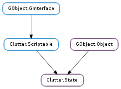

| static | new() |
| get_animator(source_state_name, target_state_name) | |
| get_duration(source_state_name, target_state_name) | |
| get_keys(source_state_name, target_state_name, object, property_name) | |
| get_state() | |
| get_states() | |
| get_timeline() | |
| remove_key(source_state_name, target_state_name, object, property_name) | |
| set_animator(source_state_name, target_state_name, animator) | |
| set_duration(source_state_name, target_state_name, duration) | |
| set_key(source_state, target_state, obj, property_name, mode, value[, pre_delay, post_delay]) | |
| set_state(target_state_name) | |
| warp_to_state(target_state_name) |
| Name | Type | Flags | Description |
|---|---|---|---|
| duration | int | r/w | Default transition duration |
| state | str | r/w | Currently set state, (transition to this state might not be complete) |
| Name | Parameters | Return | Description |
|---|---|---|---|
| completed | The ::completed signal is emitted when a Clutter.State reaches the target state specified by Clutter.State.set_state () or Clutter.State.warp_to_state (). |
| Name | Type | Access |
|---|---|---|
| parent | GObject.Object | r |
Bases: GObject.Object, Clutter.Scriptable
The Clutter.State structure contains only private data and should be accessed using the provided API
| Returns: | the newly create Clutter.State instance |
|---|---|
| Return type: | Clutter.State |
Creates a new Clutter.State
| Parameters: | |
|---|---|
| Returns: | a Clutter.Animator instance, or None |
| Return type: |
Retrieves the Clutter.Animator that is being used for transitioning between the two states, if any has been set
| Parameters: | |
|---|---|
| Returns: | the duration, in milliseconds |
| Return type: |
Queries the duration used for transitions between a source and target state pair
The semantics for the query are the same as the semantics used for setting the duration with Clutter.State.set_duration ()
| Parameters: |
|
|---|---|
| Returns: | a newly allocated GLib.List of Clutter.StateKey s. The contents of the returned list are owned by the Clutter.State and should not be modified or freed. Use GLib.List.free () to free the resources allocated by the returned list when done using it |
| Return type: |
Returns a list of pointers to opaque structures with accessor functions that describe the keys added to an animator.
| Returns: | a string containing the target state. The returned string is owned by the Clutter.State and should not be modified or freed |
|---|---|
| Return type: | str |
Queries the currently set target state.
During a transition this function will return the target of the transition.
This function is useful when called from handlers of the Clutter.State ::completed signal.
| Returns: | a newly allocated GLib.List of state names. The contents of the returned GLib.List are owned by the Clutter.State and should not be modified or freed. Use GLib.List.free () to free the resources allocated by the returned list when done using it |
|---|---|
| Return type: | [str] |
Gets a list of all the state names managed by this Clutter.State.
| Returns: | the Clutter.Timeline that drives the state change animations. The returned timeline is owned by the Clutter.State and it should not be unreferenced directly |
|---|---|
| Return type: | Clutter.Timeline |
Gets the timeline driving the Clutter.State
| Parameters: |
|
|---|
Removes all keys matching the search criteria passed in arguments.
| Parameters: |
|
|---|
Specifies a Clutter.Animator to be used when transitioning between the two named states.
The animator allows specifying a transition between the state that is more elaborate than the basic transitions allowed by the tweening of properties defined in the Clutter.State keys.
If animator is None it will unset an existing animator.
Clutter.State will take a reference on the passed animator, if any
| Parameters: |
|---|
Sets the duration of a transition.
If both state names are None the default duration for state is set.
If only target_state_name is specified, the passed duration becomes the default duration for transitions to the target state.
If both states names are specified, the passed duration only applies to the specified transition.
| Parameters: |
|
|---|---|
| Returns: | the Clutter.State instance, allowing chaining of multiple calls |
| Return type: |
Sets one specific end key for a state name, object, property_name combination.
| Parameters: | target_state_name (str) – the state to transition to |
|---|---|
| Returns: | the Clutter.Timeline that drives the state transition. The returned timeline is owned by the Clutter.State and it should not be unreferenced |
| Return type: | Clutter.Timeline |
Change the current state of Clutter.State to target_state_name.
The state will animate during its transition, see Clutter.State.warp_to_state for animation-free state switching.
Setting a None state will stop the current animation and unset the current state, but keys will be left intact.
| Parameters: | target_state_name (str) – the state to transition to |
|---|---|
| Returns: | the Clutter.Timeline that drives the state transition. The returned timeline is owned by the Clutter.State and it should not be unreferenced |
| Return type: | Clutter.Timeline |
Change to the specified target state immediately with no animation.
See Clutter.State.set_state ().